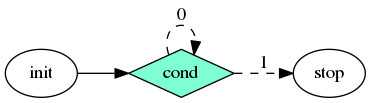

Taskflow helps you quickly write parallel and heterogeneous task programs with high performance and simultaneous high productivity. It is faster, more expressive, fewer lines of code, and easier for drop-in integration than many of existing task programming libraries. The source code is available in project GitHub.
Start Your First Taskflow Program
The following program (simple.cpp) creates four tasks A, B, C, and D, where A runs before B and C, and D runs after B and C. When A finishes, B and C can run in parallel.
int main(){
auto [A, B, C, D] = taskflow.
emplace(
);
executor.
run(taskflow).wait();
return 0;
}
class to create an executor for running a taskflow graph
Definition executor.hpp:50
tf::Future< void > run(Taskflow &taskflow)
runs a taskflow once
Definition executor.hpp:1573
Task emplace(C &&callable)
creates a static task
Definition flow_builder.hpp:742
Task & succeed(Ts &&... tasks)
adds precedence links from other tasks to this
Definition task.hpp:428
Task & precede(Ts &&... tasks)
adds precedence links from this to other tasks
Definition task.hpp:420
class to create a taskflow object
Definition core/taskflow.hpp:73
main taskflow include file
Taskflow is header-only and there is no wrangle with installation. To compile the program, clone the Taskflow project and tell the compiler to include the headers under taskflow/.
~$ git clone https://github.com/taskflow/taskflow.git # clone it only once
~$ g++ -std=c++17 simple.cpp -I taskflow/taskflow -O2 -pthread -o simple
~$ ./simple
TaskA
TaskC
TaskB
TaskD
Taskflow comes with a built-in profiler, Taskflow Profiler, for you to profile and visualize taskflow programs in an easy-to-use web-based interface.
# run the program with the environment variable TF_ENABLE_PROFILER enabled
~$ TF_ENABLE_PROFILER=simple.json ./simple
~$ cat simple.json
[
{"executor":"0","data":[{"worker":0,"level":0,"data":[{"span":[172,186],"name":"0_0","type":"static"},{"span":[187,189],"name":"0_1","type":"static"}]},{"worker":2,"level":0,"data":[{"span":[93,164],"name":"2_0","type":"static"},{"span":[170,179],"name":"2_1","type":"static"}]}]}
]
# paste the profiling json data to https://taskflow.github.io/tfprof/
Create a Subflow Graph
Taskflow supports dynamic tasking for you to create a subflow graph from the execution of a task to perform dynamic parallelism. The following program spawns a task dependency graph parented at task B.
}).name("B");
class to construct a subflow graph from the execution of a dynamic task
Definition flow_builder.hpp:889
class to create a task handle over a node in a taskflow graph
Definition task.hpp:187
Integrate Control Flow into a Task Graph
Taskflow supports conditional tasking for you to make rapid control-flow decisions across dependent tasks to implement cycles and conditions in an end-to-end task graph.

Offload Tasks to a GPU
Taskflow supports GPU tasking for you to accelerate a wide range of scientific computing applications by harnessing the power of CPU-GPU collaborative computing using CUDA.
__global__ void saxpy(int n, float a, float *x, float *y) {
int i = blockIdx.x*blockDim.x + threadIdx.x;
if (i < n) {
y[i] = a*x[i] + y[i];
}
}
}).name("cudaFlow");
class to create a cudaFlow task dependency graph
Definition cudaflow.hpp:56
cudaTask kernel(dim3 g, dim3 b, size_t s, F f, ArgsT &&... args)
creates a kernel task
Definition cudaflow.hpp:1272
cudaTask copy(T *tgt, const T *src, size_t num)
creates a memcopy task that copies typed data
Definition cudaflow.hpp:1348
class to create a task handle over an internal node of a cudaFlow graph
Definition cuda_task.hpp:65
cudaTask & succeed(Ts &&... tasks)
adds precedence links from other tasks to this
Definition cuda_task.hpp:189
cudaTask & name(const std::string &name)
assigns a name to the task
Definition cuda_task.hpp:200
cudaTask & precede(Ts &&... tasks)
adds precedence links from this to other tasks
Definition cuda_task.hpp:182

Compose Task Graphs
Taskflow is composable. You can create large parallel graphs through composition of modular and reusable blocks that are easier to optimize at an individual scope.
Task composed_of(T &object)
creates a module task for the target object
Definition flow_builder.hpp:812
const std::string & name() const
queries the name of the task
Definition task.hpp:499
Launch Asynchronous Tasks
Taskflow supports asynchronous tasking. You can launch tasks asynchronously to incorporate independent, dynamic parallelism in your taskflows.
return 1;
});
executor.
async([](){
std::cout <<
"async task created within a task\n"; });
});
executor.
run(taskflow).wait();
auto async(F &&f, ArgsT &&... args)
runs a given function asynchronously
Definition executor.hpp:784
void silent_async(F &&f, ArgsT &&... args)
similar to tf::Executor::async but does not return a future object
Definition executor.hpp:815
class to access the result of an execution
Definition core/taskflow.hpp:571
Run a Taskflow through an Executor
The executor provides several thread-safe methods to run a taskflow. You can run a taskflow once, multiple times, or until a stopping criteria is met. These methods are non-blocking with a tf::Future<void> return to let you query the execution status.
run_once.get();
executor.
run_n(taskflow, 4);
executor.
run_until(taskflow, [counter=5](){
return --counter == 0; });
tf::Future< void > run_until(Taskflow &taskflow, P &&pred)
runs a taskflow multiple times until the predicate becomes true
Definition executor.hpp:1622
tf::Future< void > run_n(Taskflow &taskflow, size_t N)
runs a taskflow for N times
Definition executor.hpp:1595
void wait_for_all()
wait for all tasks to complete
Definition executor.hpp:1709
Leverage Standard Parallel Algorithms
Taskflow defines algorithms for you to quickly express common parallel patterns using standard C++ syntaxes, such as parallel iterations, parallel reductions, and parallel sort.
first, last, [] (auto& i) { i = 100; }
);
first, last, init, [] (auto a, auto b) { return a + b; }
);
first, last, [] (auto a, auto b) { return a < b; }
);
dfirst, dlast, [] __device__ (auto i) { i = 100; }
);
dfirst, dlast, init, [] __device__ (auto a, auto b) { return a + b; }
);
dfirst, dlast, [] __device__ (auto a, auto b) { return a < b; }
);
Task sort(B first, E last, C cmp)
constructs a dynamic task to perform STL-styled parallel sort
Task reduce(B first, E last, T &init, O bop)
constructs a STL-styled parallel-reduce task
Task for_each(B first, E last, C callable)
constructs a STL-styled parallel-for task
Additionally, Taskflow provides composable graph building blocks for you to efficiently implement common parallel algorithms, such as parallel pipeline.
if(pf.token() == 5) {
pf.stop();
}
}},
printf(
"stage 2: input buffer[%zu] = %d\n", pf.line(), buffer[pf.line()]);
}},
printf(
"stage 3: input buffer[%zu] = %d\n", pf.line(), buffer[pf.line()]);
}}
);
executor.
run(taskflow).wait();
class to create a pipe object for a pipeline stage
Definition pipeline.hpp:136
class to create a pipeflow object used by the pipe callable
Definition pipeline.hpp:42
class to create a pipeline scheduling framework
Definition pipeline.hpp:312
Visualize Taskflow Graphs
You can dump a taskflow graph to a DOT format and visualize it using a number of free GraphViz tools such as GraphViz Online.
void dump(std::ostream &ostream) const
dumps the taskflow to a DOT format through a std::ostream target
Definition core/taskflow.hpp:363
Supported Compilers
To use Taskflow, you only need a compiler that supports C++17:
- GNU C++ Compiler at least v8.4 with -std=c++17
- Clang C++ Compiler at least v6.0 with -std=c++17
- Microsoft Visual Studio at least v19.27 with /std:c++17
- AppleClang Xode Version at least v12.0 with -std=c++17
- Nvidia CUDA Toolkit and Compiler (nvcc) at least v11.1 with -std=c++17
- Intel C++ Compiler at least v19.0.1 with -std=c++17
- Intel DPC++ Clang Compiler at least v13.0.0 with -std=c++17 and SYCL20
Taskflow works on Linux, Windows, and Mac OS X.
Get Involved
Visit our project website and showcase presentation to learn more about Taskflow. To get involved:
We are committed to support trustworthy developments for both academic and industrial research projects in parallel and heterogeneous computing. If you are using Taskflow, please cite the following paper we publised at 2022 IEEE TPDS:
More importantly, we appreciate all Taskflow Contributors and the following organizations for sponsoring the Taskflow project!
License
Taskflow is open-source under permissive MIT license. You are completely free to use, modify, and redistribute any work on top of Taskflow. The source code is available in project GitHub and is actively maintained by Dr. Tsung-Wei Huang and his research group at the University of Utah.